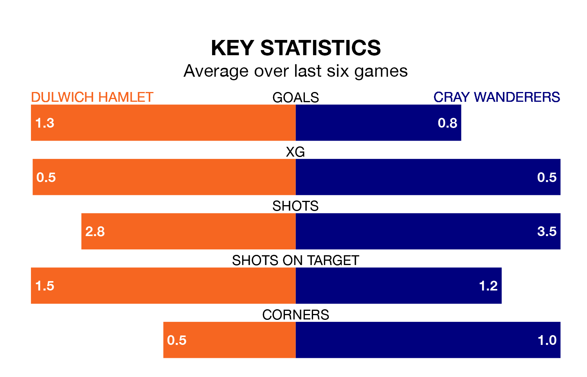

Cray Wanderers come to Imperial Fields to play Dulwich Hamlet on Saturday in terrible form, having collected just two points from their last six games.
The visitors have drawn two and lost four of their last six fixtures, while Dulwich Hamlet have two wins and a draw.
With 48 goals in 40 games so far this season, Cray are scoring at below the league average rate with 1.2 goals per game. And they are conceding at an average rate, letting in 62 goals at a rate of 1.6 per game.
Dulwich Hamlet, meanwhile, are above average scorers, with 1.8 goals per game, compared to a league average of 1.6. They have conceded 1.6 goals per game.
Wanderers are 17th in the table after 40 games, of which they have won 12 and drawn 11, earning 47 points.
The hosts are eight places ahead of the away side in ninth, with 16 wins and 11 draws putting them on 59 points.
Over the last two years, Dulwich Hamlet and Cray have played each other twice. Dulwich Hamlet won one of them and they drew the other.
Their last meeting was on November 25, when they played out a 1-1 draw.
Dulwich Hamlet's last match was on April 20, a 3-3 draw against Folkestone Invicta.
Cray lost 5-1 against Bognor Regis Town last time out, also on April 20.
Updated: 07:59 (UTC), 26/04/24